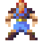
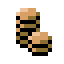
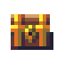
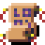
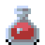
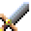
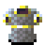

Controls:
|

|
Press "WASD" to move.
「WASD」を押して移動します。
Press any key to open the main menu.
任意のキーを押すと、メイン メニューが開きます。
Press "SPACE" or "ENTER" to select menu options.
メニューオプションを選択するには「SPACE」または「ENTER」を押します。
Press "R" to go back in the menu.
メニューに戻るには、「R」を押します。
|
|
|
Press [ 1 - 8 ] number keys to use your items and scrolls.
[ 1 ～ 8 ] 数字キーを押して、アイテムやスクロールを使用します。
|
|
|
Press "SPACE" or "ENTER" to select the tile word you are on.
「SPACE」または「ENTER」を押して、現在のタイルの単語を選択します。
|
|
|
Correct selections heal your HP.
正しい選択があなたをのHPを回復します。
|

|
Wrong selections decrease your score, and will eventually decrease your HP.
間違った選択をするとスコアが下がり、最終的にはあなたのHPも下がります。
|
|

|
Collecting gold can protect you and increase your score. However, it also makes more monsters come for you.
ゴールドを集めるとあなたを守り、スコアを増やすことができます。
ただし、より多くのモンスターがあなたを探しに来るようになります。
|
|
|
There are bonuses for perfect games with no mistakes. Try to get them all!
ミスのない完璧なゲームにはボーナスがあります。 全部ゲットしてみてね！
|
Drops:
|
|

|
Monsters can drop items or scrolls of magic:
モンスターはアイテムや魔法の巻物をドロップする可能です。
|
|
Items: アイテム:
|
|

|
Potion: Heals your HP.
ポーション：HPを回復します。
|
|
|
Repel: Repels monsters for a short time.
よけ：短時間モンスターよけをします。
|
|

|
Sword: Increases your attack power, but wears down over time.
剣：攻撃力が上がりますが、少しずつ弱くなります。
|
|

|
Armor: Increases your defense ability, but wears down over time.
よろい：防御力が上がりますが、少しずつ弱くなります。
|
|
Magic Scrolls 魔法の巻物:
|
|
|
Warp: Moves you to a random tile.
ワープ: ランダムなタイルに移動させます。
Storm: Moves all monsters to a random tile.
ストーム: すべてのモンスターをランダムなタイルに移動させます。
Aura: Heals yours, and surrounding monsters' HP.
オーラ：自分と周囲のモンスターのHPを回復します。
Thunder: Shoots lightning in four directions around you.
サンダー：周囲4方向に稲妻を発射します。
Fireball: Shoots a ball of fire in the last direction that you moved.
ファイアボール: 先に移動した方向に火の玉を発射します。
Freeze: Freezes monsters for a short time.
フリーズ：モンスターを短時間に凍結させます。
Steal: All enemies drop some gold.
ぬすむ：すべての敵がゴールドを落とします。
Study: Clears some incorrect answer tiles.
がくしゅう: いくつかの不正解なタイルを消去します。
Copy: Copies one of another scroll in your bag.
コピー: バッグ内の別の巻物を 1 つをコピーします。
Cheat: Highlights all remaining correct answer tiles, but has a random penalty.
チート: 残りの正解なタイルをすべて強調表示しますが、ランダムなペナルティがかかります。
|